import numpy as np
import matplotlib.pyplot as plt
# The seaborn package makes your plots look nicer
import seaborn as sns
# Imports system time module to time your script
import time
plt.close('all') # close all open figures
tic = time.perf_counter()4 Plotting using matplotlib
In this chapter we explore some of the graphical functionality of Python. We first import the required libraries for plotting.
4.1 Plotting Vectors and Arrays
4.1.1 Plotting Simple Vectors
We first define a grid vector xv. We then plot the first vector using the plot() command in the following figure:
xv = np.array([1, 2, 3, 4, 5])
carsv = np.array([1, 3, 6, 4, 9])
plt.plot(xv, carsv, 'b-', linewidth=2)
plt.title('Cars', fontsize=14)
# Save graphs in subfolder Graphs under name: fig1.pdf
#plt.savefig('./Graphs/fig0.pdf')
plt.show()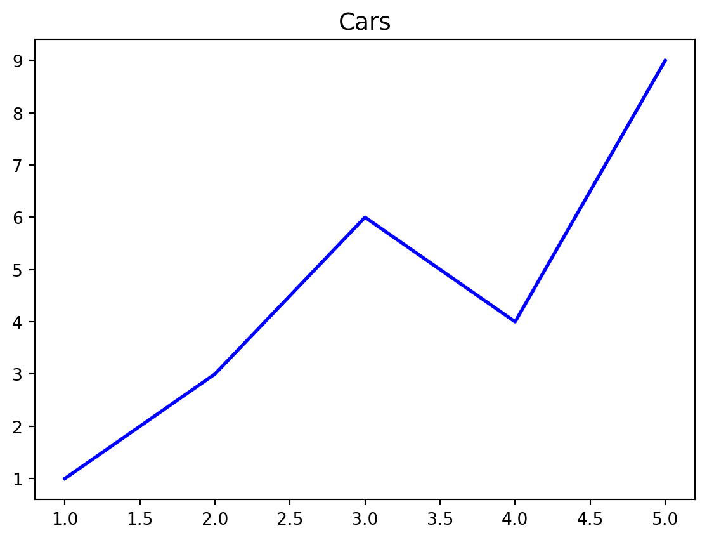
print("Time passed in seconds is = {:4.4f}".format(time.perf_counter() - tic))Time passed in seconds is = 0.17704.1.2 Plotting Two Vectors
We first define a couple of vectors.
# Define vectors with 5 values each
xv = np.array([1, 2, 3, 4, 5])
carsv = np.array([1, 3, 6, 4, 9])
trucksv = np.array([2, 5, 4, 5, 12])
suvsv = np.array([4, 4, 6, 6, 16])We then plot the carsv and the trucksv vector into one graph. Compare the next figure.
fig, ax = plt.subplots()
ax.plot(xv,carsv, 'k-o', xv,trucksv,'b-.')
# Create a title with a red, bold/italic font
ax.set_title('Autos')
ax.legend(['cars', 'trucks'],loc='best')
plt.show()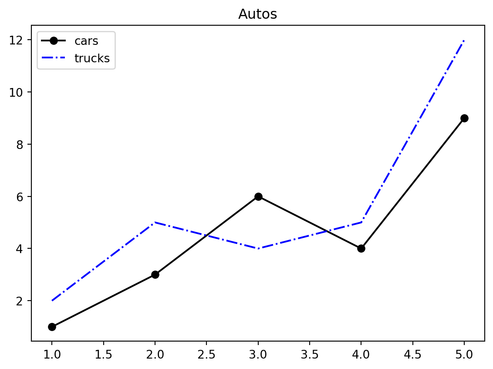
4.1.3 Graph 3 Car Types
Finally, we graph all three car types into one figure. This time we save the graph as fig1.pdf into subfolder Graphs.
fig, ax = plt.subplots()
ax.plot(xv, carsv, 'b-o', xv, trucksv,'r-^', xv, suvsv, 'g:s')
ax.set_title('Autos')
ax.set_xlabel('Days')
ax.set_ylabel('Total')
ax.set_xlim([0.5,5.5])
#ylim(min(cars,trucks),max(cars,trucks))
# Create a legend
ax.legend(['cars', 'trucks', 'suvs'], loc = 'best')
# Save graphs in subfolder Graphs under name: fig1.pdf
#plt.savefig('./Graphs/fig1.pdf')
plt.show()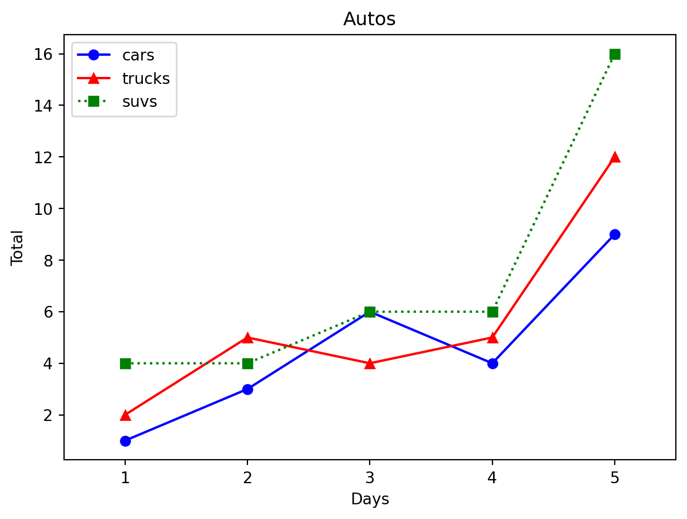
4.2 Plotting Functions
4.2.1 First Example
If we want to plot a more general function like the \(y = \sqrt{x}\) we first need to define a grid of x values and then calculate the corresponding y-values for each grid point. This results in x and y coordinates for a number of points that we can then add to a coordinate system. After connecting these points in the graph, we get our function plot of the square root function.
Each row represents the x and y coordinates of points that we now plot into the coordinate system. Let’s define the vectors first.
import numpy as np
import matplotlib.pyplot as plt
xv = np.array([0, 1, 2, 3, 4])
yv = np.zeros(len(xv))
print('--------------')
print('x | y ')
print('--------------')
for i in range(len(xv)):
yv[i] = np.sqrt(xv[i])
print('{:5.2f} | {:5.2f}'.format(xv[i],yv[i]))
print('--------------')--------------
x | y
--------------
0.00 | 0.00
1.00 | 1.00
2.00 | 1.41
3.00 | 1.73
4.00 | 2.00
--------------We next plot these points into a coordinate system using the plot() function from the matplotlib.pyplot sub-library.
plt.plot(xv, yv, 'o')
plt.show()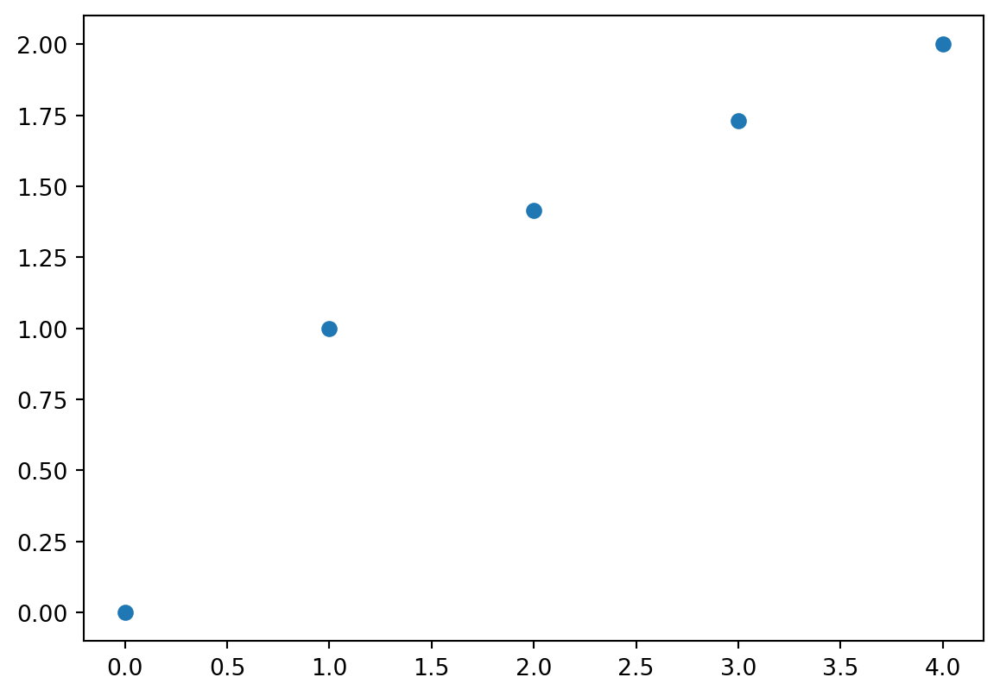
If you would like to connect the dots, you can change the code to:
plt.plot(xv, yv, '-o')
plt.show()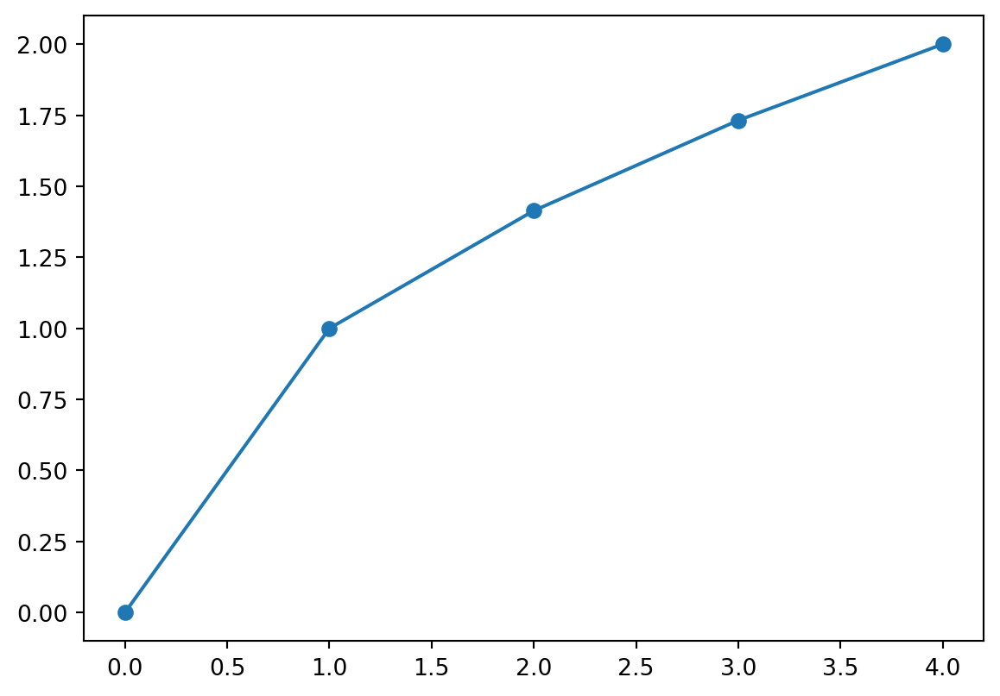
This graph looks still a bit choppy. If you would like a smoother graph you need to evaluate the function using more points. We can also generate the x-grid automatically using the linspace function from the numpy library. We then calculate the corresponding y values with :math:` y = sqrt(x)` for each one of the x grid-points and record them in a yv vector.
xv = np.linspace(0, 4, 30) # Generates 30 points between 0 and 4
yv = np.zeros(len(xv))
for i in range(len(xv)):
yv[i] = np.sqrt(xv[i])
plt.plot(xv, yv, '-o')
plt.show()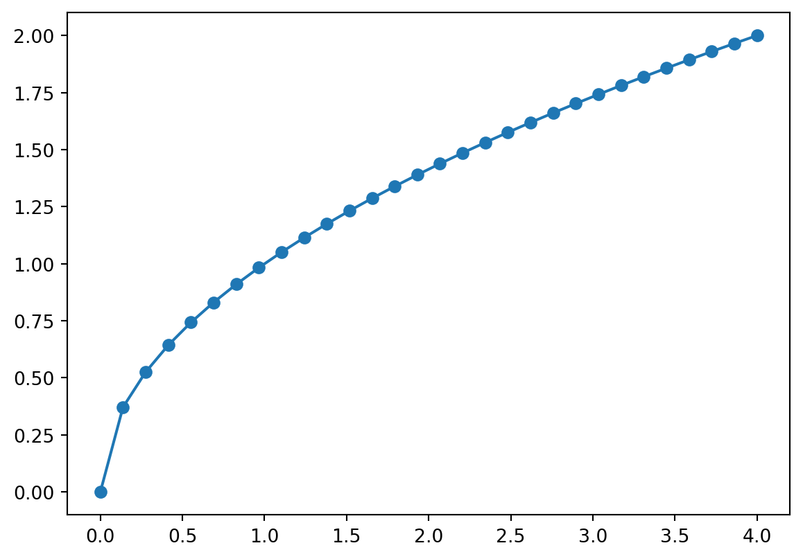
Finally we use a very powerful feature that all functions of the numpy library have in common. It is called vector evaluation. This means that any function in the numpy library can be applied on a vector without a loop which results in a new vector containing the results of the function evaluations on each point in the original vector. Sounds complicated but is really easy. And just to make the function even smoother we add some more points and plot it in the color red, look:
xv = np.linspace(0, 4, 50) # Generates 30 points between 0 and 4
yv = np.sqrt(xv) # Vector evaluation, sqrt() is applied to each point in xv
plt.plot(xv, yv, 'r-o')
plt.show()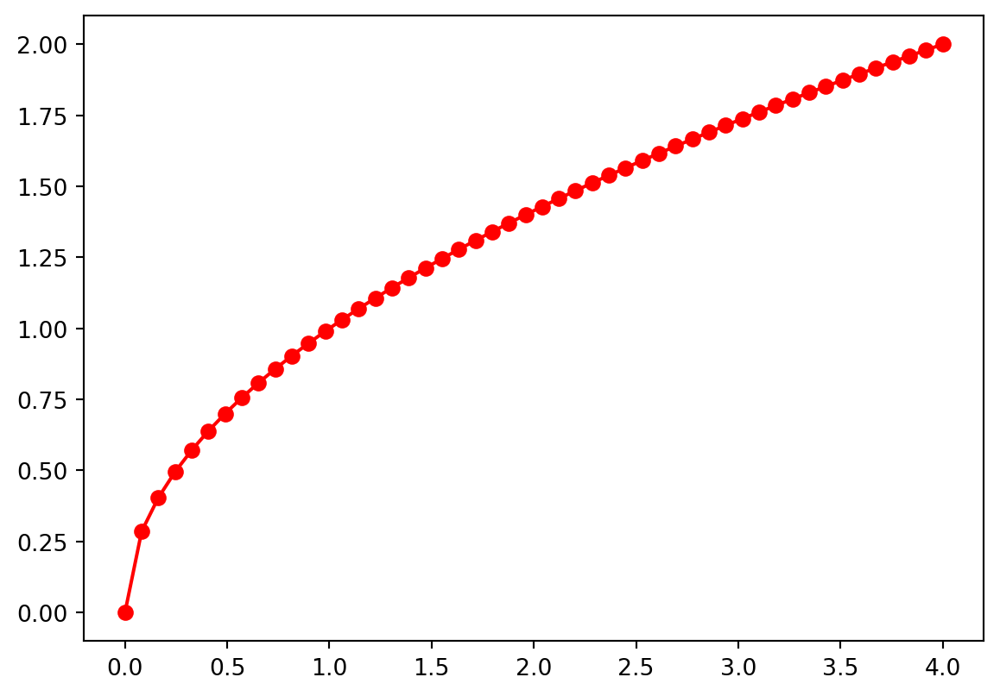
4.2.2 Second Example Using subplots()
Here is another example of a simple function, the \(y = sin(x)\) function. When we plot this function we use a more powerful plotting function called subplots(). This will allow us to plot multiple graphs into a single figure. I now also add labels to the graph and a legend. We also use the sin() function from the numpy library which allows us to use vector evaluation again so that we do not have to write a loop to evaluate the x-grid values.
Note
You should always have a title and labels in your figures!
xv = np.linspace(0, 10, 200)
yv = np.sin(xv)
fig, ax = plt.subplots()
ax.plot(xv, yv, 'r-', linewidth=2, label='sine function', alpha=0.6)
ax.set_title('Plotting the sin() function')
ax.set_xlabel('x')
ax.set_ylabel('y')
ax.legend(loc='best')
plt.show()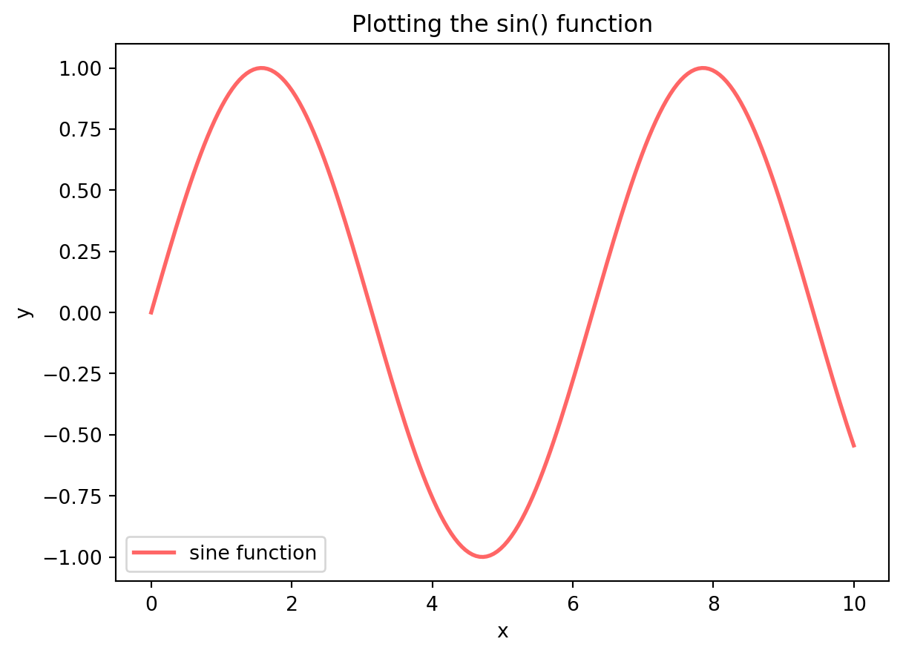
4.2.3 Plotting Multiple Functions into a Graph
Here is another example with some more functions. We again first define the input vector xv with the values we want to evaluate the function at and then specify the “output” vector yv as \(y = f(x)\). We use the following examples:
- \(f(x) = 50 \times sin(x)\),
- \(f(x) = x^2\),
- \(f(x) = 3 \times (x^2)/2 - 5\), and finally
- \(f(x) = 5 \times (x^2)/2 - \sqrt{x}\).
xv = np.arange(1, 10, 0.1)
y1v = 50*np.sin(xv)
y2v = xv**2
y3v = 3.0*(xv**2)/2 - 5
y4v = 5.0*(xv**2)/2 - np.sqrt(xv)We have now two columns of values: x and y that we can plot against each other into a coordinate system.
fig, ax = plt.subplots()
ax.plot(xv, y1v, \
xv, y2v, \
xv, y3v, \
xv, y4v)
ax.legend(['sin(x)', r'$x^2$', 'y3', 'y4'], loc = 'best')
ax.set_title('Many Functions')
ax.set_xlabel('x')
ax.set_ylabel('y')
plt.show()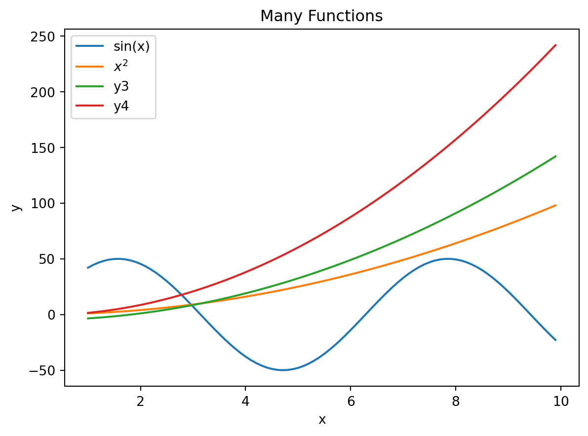
4.3 Subplots
If we have more than one figure it might be good to put them all into one graph. In the following example we plot 6 figures into one picture. We plot into 3 rows and 2 columns. You can obviously rearrange all this.
# Creates a 3 x 2 grid of subplots
num_rows = 3
num_cols = 2
title_size = 26
fig = plt.figure(figsize=(8, 10))
fig.suptitle("Figure with multiple subplots", \
fontsize=title_size, fontweight='bold')
plt.subplots_adjust(wspace=0.2, hspace=0.3)
# [1]
ax = plt.subplot2grid((num_rows, num_cols), (0,0))
ax.plot([1,2,3])
ax.set_title('figure 1')
ax.set_xlabel('x')
ax.set_ylabel('y')
# [2]
ax = plt.subplot2grid((num_rows, num_cols), (0,1))
ax.plot(np.random.rand(12), np.random.rand(12), 'bo')
ax.set_title('figure 2')
ax.set_xlabel('x')
ax.set_ylabel('y')
# [3]
ax = plt.subplot2grid((num_rows, num_cols), (1,0))
ax.plot(np.array([1,2,3]), np.array([1,1,1]))
ax.set_title('figure 3')
ax.set_xlabel('x')
ax.set_ylabel('y')
# [4]
ax = plt.subplot2grid((num_rows, num_cols), (1,1))
ax.plot(np.linspace(1,12,12), np.random.rand(12), 'r^')
ax.set_title('figure 4')
ax.set_xlabel('x')
ax.set_ylabel('y')
# [5]
ax = plt.subplot2grid((num_rows, num_cols), (2,0))
ax.plot([1,2,1],':')
ax.set_title('figure 5')
ax.set_xlabel('x')
ax.set_ylabel('y')
# [6]
ax = plt.subplot2grid((num_rows, num_cols), (2,1))
ax.plot(np.linspace(1,12,12), np.random.rand(12), 'k-x')
ax.set_title('figure 6')
ax.set_xlabel('x')
ax.set_ylabel('y')
plt.show()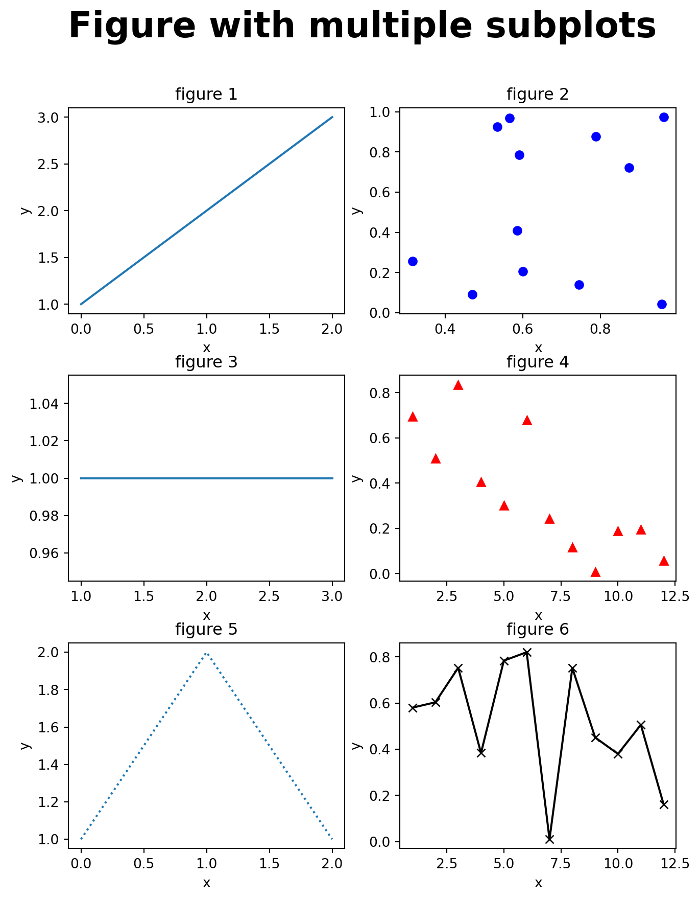
4.4 3D-Graphs
Finally, we can also plot 3-D graphs in Python. The function we would like to plot is
\[f(x,y) = 3.0 \frac{y^2}{2.0} + x - \frac{\sqrt{x \times y}}{5.0}.\]
We start by defining an x-grid and a y-grid vector. We then evaluate the function at these values.
from mpl_toolkits.mplot3d import Axes3D
# Define x and y grid vectors
xv = np.arange(1, 10, 1)
yv = np.arange(1, 10, 1)
n = len(xv)
# Evaluation function at grid values
zv = 3 * yv**2 /2 + xv - np.sqrt(xv*yv) /5
# Use x,y,z as coordinates for points in 3D space
fig = plt.figure(figsize=(8, 10))
ax = Axes3D(fig)
ax.plot(xv, yv, zv, zdir='z', label='parametric curve')
ax.set_title('Function in 2 variables')
ax.set_xlabel('x')
ax.set_ylabel('y')
ax.set_zlabel('f(x,y)')
plt.show()/tmp/ipykernel_11734/1944529585.py:13: MatplotlibDeprecationWarning:
Axes3D(fig) adding itself to the figure is deprecated since 3.4. Pass the keyword argument auto_add_to_figure=False and use fig.add_axes(ax) to suppress this warning. The default value of auto_add_to_figure will change to False in mpl3.5 and True values will no longer work in 3.6. This is consistent with other Axes classes.
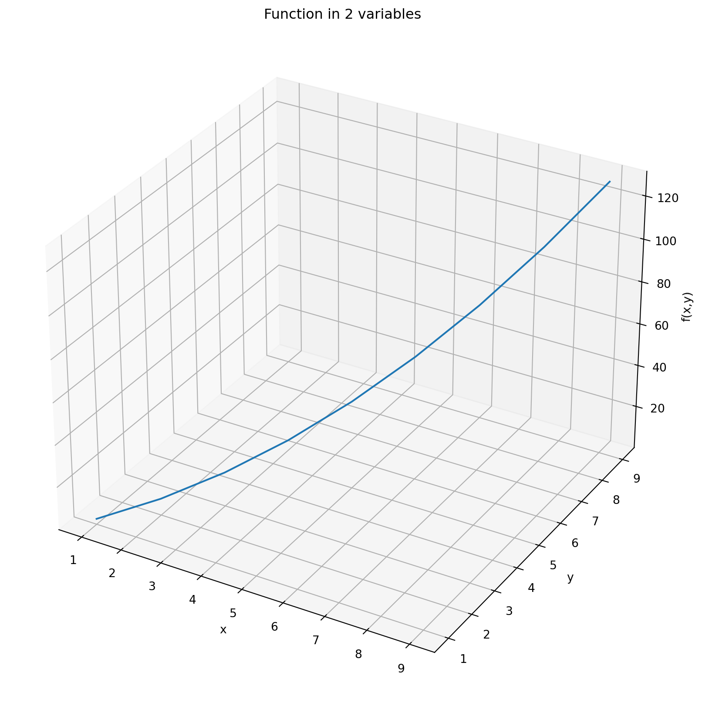
The problem with this approach is that the function gets only evaluated at the 45-degree line, that is at points (x=1, y=1), (x=2, y=2), …, (x=10, y=10). This is not really what we had in mind.
In order to plot the entire “surface” of the function \(f(x,y)\) we need to specify value pairs of x and y over the entire gridspace of the x/y plane. We use the command meshgrid in order to accomplish this. We then evaluate the function \(f(x,y)\) for each point on this “meshgrid” which results in a surface plot of the function.
from mpl_toolkits.mplot3d import Axes3D
fig = plt.figure(figsize=(8, 10))
ax = plt.gca(projection='3d')
# Define grids in x and y dimension
xv = np.arange(1, 10, 1)
yv = np.arange(1, 10, 1)
# Span meshgrid over entire x/y plane
X, Y = np.meshgrid(xv, yv)
# Evaluate function at each point in the x/y plane
Z = 3.0 * Y**2.0 /2.0 + X - np.sqrt(X*Y) /5.0
# Plot the result
surf = ax.plot_surface(X, Y, Z, rstride=1, cstride=1, cmap = plt.cm.jet, \
linewidth=0, antialiased=False)
ax.set_title('Function in 2 variables')
ax.set_xlabel('x')
ax.set_ylabel('y')
ax.set_zlabel('f(x,y)')
plt.show()/tmp/ipykernel_11734/4058265909.py:4: MatplotlibDeprecationWarning:
Calling gca() with keyword arguments was deprecated in Matplotlib 3.4. Starting two minor releases later, gca() will take no keyword arguments. The gca() function should only be used to get the current axes, or if no axes exist, create new axes with default keyword arguments. To create a new axes with non-default arguments, use plt.axes() or plt.subplot().
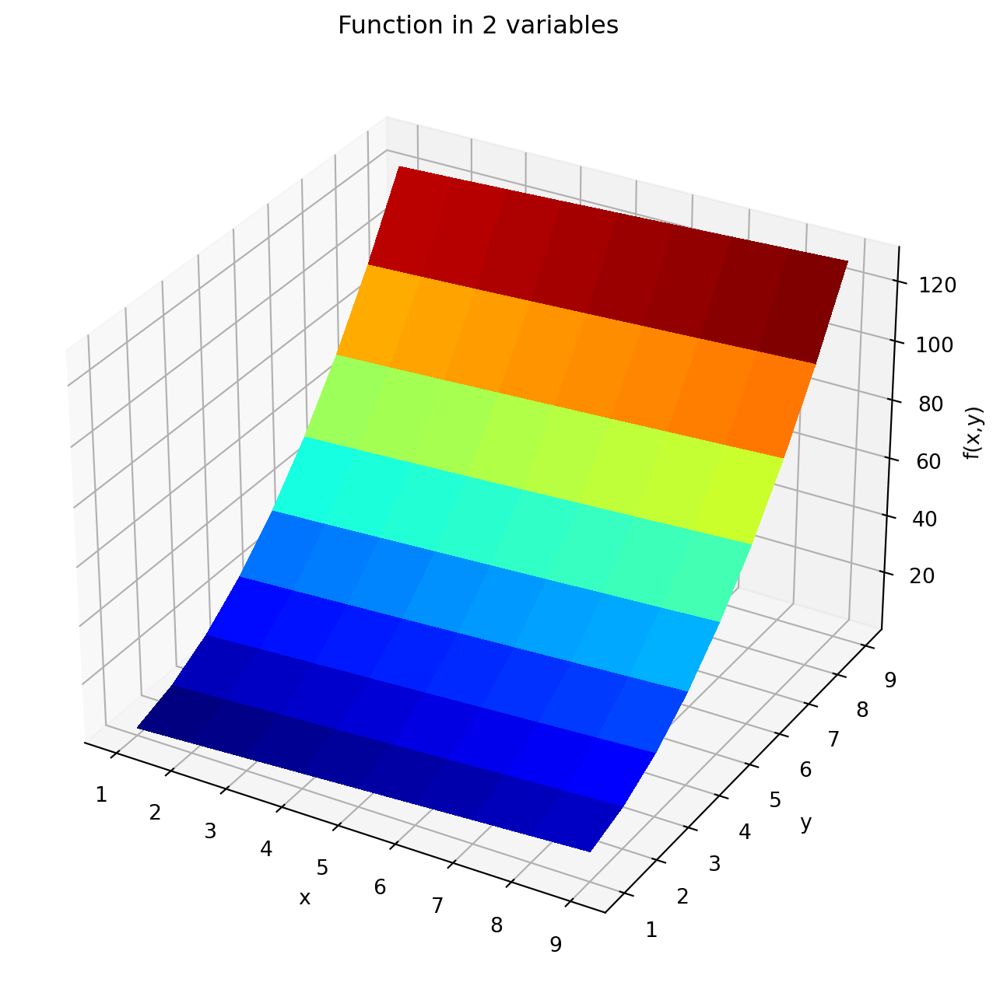
4.5 3D-Utility Function Graphs
We first start with some definitions of the consumption and leisure grid. We then evaluate the utility at all the consumption-leisure combination points.
titleSize = 26
legendSize = 16
labelSize = 18
tickSize = 16
# Define grids in x and y dimension
lv = np.linspace(0.0, 1.05, 20)
cv = np.linspace(0.0, 1.05, 20)
# Span meshgrid over entire x/y plane
L,C = np.meshgrid(lv, cv)
# Evaluate function at each point in the x/y plane
U = np.sqrt(L) + np.sqrt(C)We can now plot the utility function. We plot it first as Wire-Frame graph.
# Plot the result
fig = plt.figure(figsize=(7, 7))
ax = Axes3D(fig)
ax.plot_wireframe(L,C, U, rstride=1, cstride=1)
ax.set_title(r'Utility Function: $U(c,l)=\sqrt{c}+\sqrt{l}$', fontsize=titleSize)
ax.set_xlabel('l', fontsize=labelSize)
ax.set_ylabel('c', fontsize=labelSize)
ax.set_zlabel('U(c,l)', fontsize=labelSize)
ax.set_xlim([0,1])
ax.set_ylim([0,1])
ax.view_init(elev=25., azim=225)
plt.show()/tmp/ipykernel_11734/1432048687.py:3: MatplotlibDeprecationWarning:
Axes3D(fig) adding itself to the figure is deprecated since 3.4. Pass the keyword argument auto_add_to_figure=False and use fig.add_axes(ax) to suppress this warning. The default value of auto_add_to_figure will change to False in mpl3.5 and True values will no longer work in 3.6. This is consistent with other Axes classes.
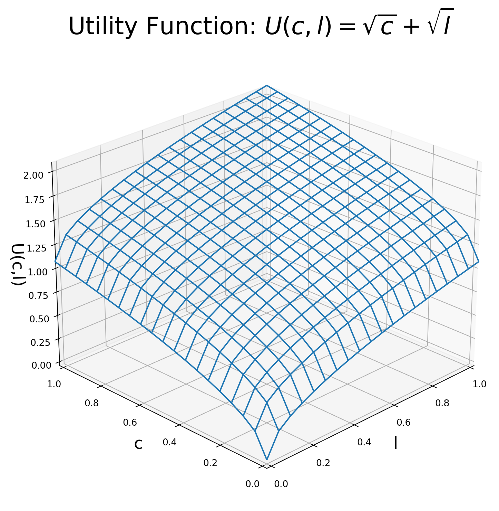
We can also fill in the graph a bit more using the plot_surface command.
# Plot the result
fig = plt.figure(figsize=(7, 7))
ax = Axes3D(fig)
ax.plot_surface(L,C, U, rstride=1, cstride=1, cmap = plt.cm.jet, \
linewidth=0, antialiased=False)
ax.set_title(r'Utility Function: $U(c,l)=\sqrt{c}+\sqrt{l}$', fontsize=titleSize)
ax.set_xlabel('l', fontsize=labelSize)
ax.set_ylabel('c', fontsize=labelSize)
ax.set_zlabel('U(c,l)', fontsize=labelSize)
ax.set_xlim([0,1])
ax.set_ylim([0,1])
ax.view_init(elev=25., azim=225)
plt.show()/tmp/ipykernel_11734/3673948533.py:3: MatplotlibDeprecationWarning:
Axes3D(fig) adding itself to the figure is deprecated since 3.4. Pass the keyword argument auto_add_to_figure=False and use fig.add_axes(ax) to suppress this warning. The default value of auto_add_to_figure will change to False in mpl3.5 and True values will no longer work in 3.6. This is consistent with other Axes classes.
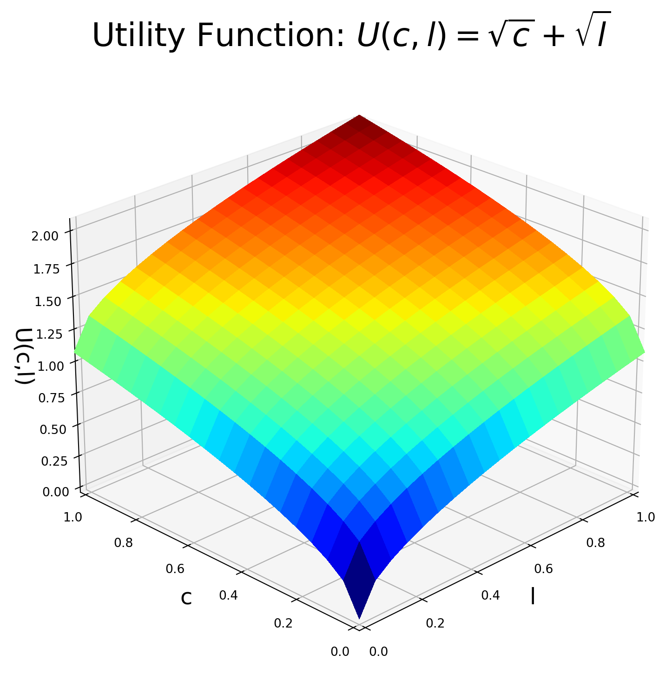
We next plot some of the indifference curves into the utility “mountain”.
fig = plt.figure(figsize=(7, 7))
ax = Axes3D(fig)
ax.contour(L,C, U, linewidths=3)
ax.view_init(elev=25., azim=225)
ax.set_title(r'Indifference Curves: $U(c,l)=\sqrt{c}+\sqrt{l}$', fontsize=titleSize)
ax.set_xlabel('l', fontsize=labelSize)
ax.set_xlim([0,1])
ax.set_ylim([0,1])
ax.set_ylabel('c', fontsize=labelSize)
ax.set_zlabel('U(c,l)', fontsize=labelSize)
plt.show()/tmp/ipykernel_11734/2602835627.py:2: MatplotlibDeprecationWarning:
Axes3D(fig) adding itself to the figure is deprecated since 3.4. Pass the keyword argument auto_add_to_figure=False and use fig.add_axes(ax) to suppress this warning. The default value of auto_add_to_figure will change to False in mpl3.5 and True values will no longer work in 3.6. This is consistent with other Axes classes.
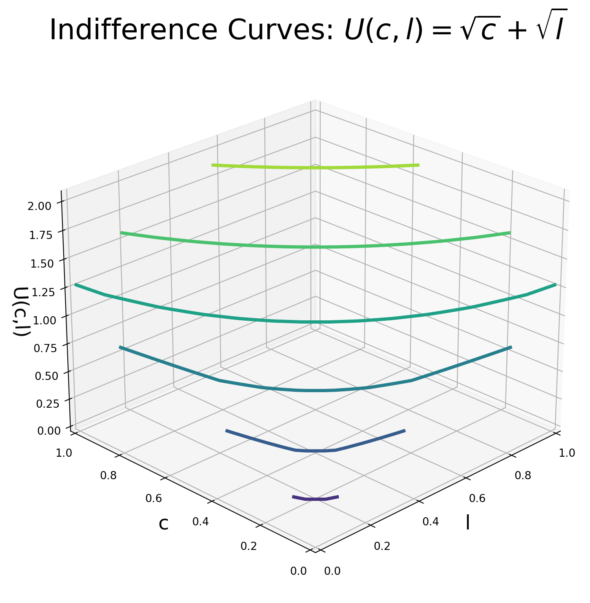
We next show the 2-dimensional representation of the indifference curves.
fig, ax = plt.subplots(figsize=(7, 7))
CS=ax.contour(L,C, U, linewidths=3)
ax.set_title(r'Indifference Curves: $U(c,l)=\sqrt{c}+\sqrt{l}$', fontsize=titleSize)
ax.set_xlabel('l', fontsize=labelSize)
ax.set_ylabel('c', fontsize=labelSize)
ax.set_xlim([0,1])
ax.set_ylim([0,1])
ax.clabel(CS, inline=1, fontsize=14)
plt.show()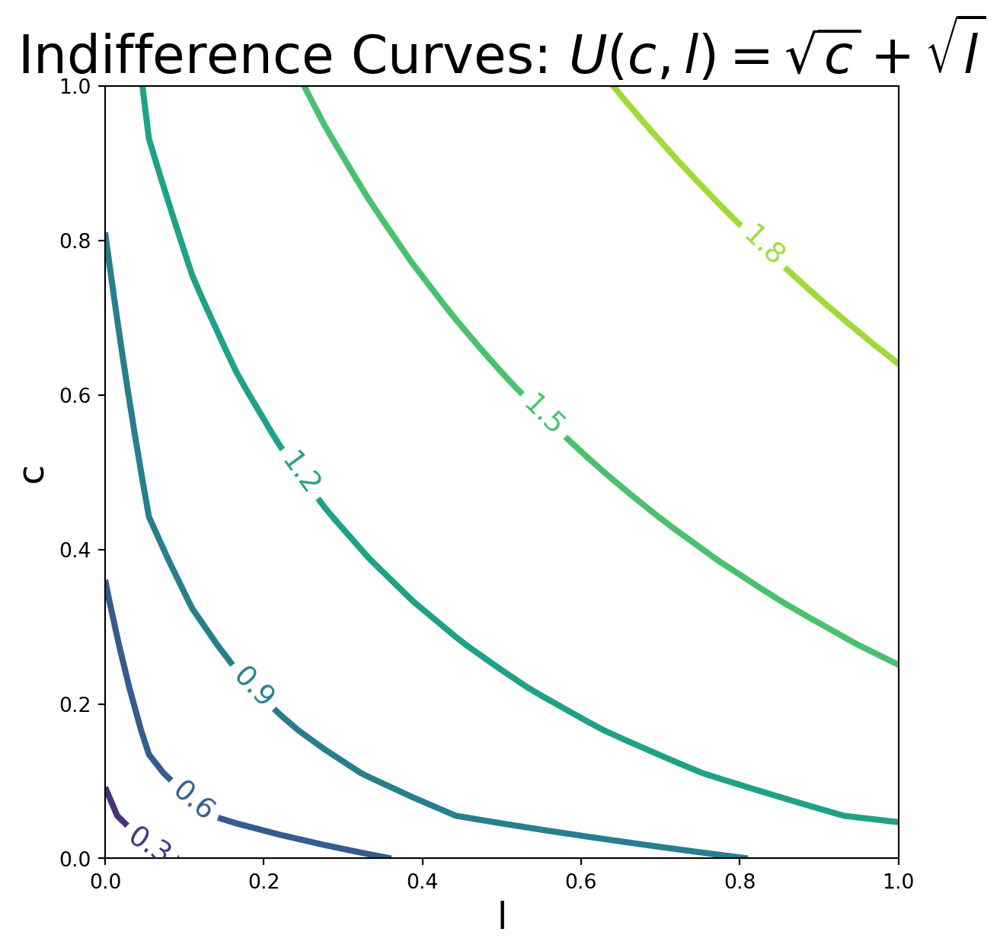
4.6 Key Concepts and Summary
Note
- A vector is a list of numbers.
- The plot command needs two vectors that hold the coordinates of points you would like to plot
- Use titles and label the axes in your plots.